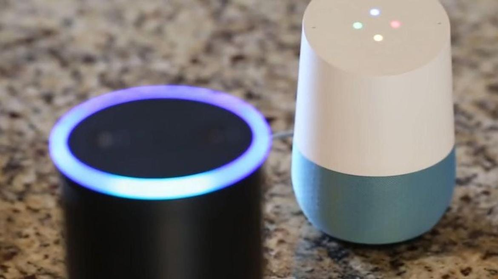
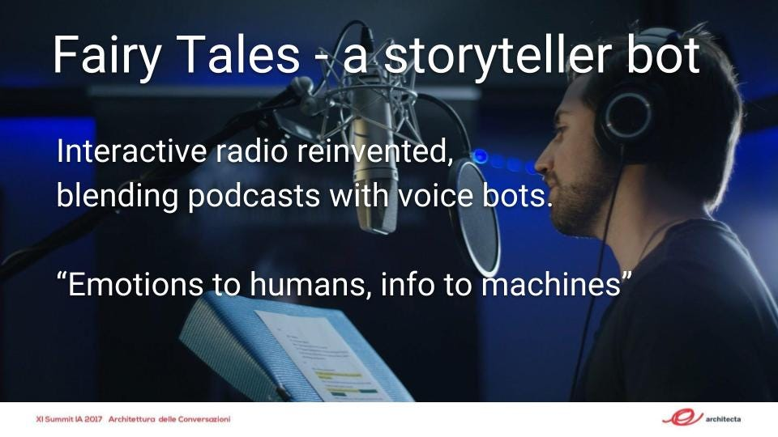

Il 2018 è l’anno delle interfacce vocali?
Riflessioni sull’articolo di Toni Fontana: Progettazione Chatbot 2018

Apprezzo sempre gli articoli di Toni Fontana sul suo blog Architettura dell’Informazione Sonora, ed invito il lettore a leggere il recente articolo:
Quoto qui qualche passaggio e mi permetto qualche riflessione e domanda. Propongo infine un mio punto di vista su come stanno andando le cose nel mondo delle interfacce conversazionali (vocali).
La progettazione chatbot 2018 è al centro della discussione di progettisti che sono impegnati nella costruzione di Vocal User Interface. Il tema è talmente nuovo, che al momento possiamo solo parlare di sperimentazione
Probabilmente in questo passo è stato usato il termine chatbot intendendo in generale un’applicazione conversazionale. Va benissimo! Ultimamente si tende a distinguere i chatbot (applicazioni conversazionali la cui user interface è lo scambio di testi, tipicamente in applicazioni di messaggistica istantanea su smartphone) dai voicebot (applicazioni conversazionali la cui interfaccia si attua attraverso la voce); esempi di successo in USA nel 2017 sono i voice assistant di Amazon (Alexa, attraverso i dispositivi smartspeaker della serie Amazon Echo ed app su telefono mobile) e Google (Google Assistant attraverso il dispositivo Google Home).
Amazon Echo (il primo “smartspeaker” di grande successo commerciale) fu lanciato a fine 2014; sono passati più di 3 anni e se non erro Amazon Echo Dot è stato l’oggetto più venduto in assoluto da parte di Amazon durante le vacanze di Natale 2017. Google Home è stato lanciato nel novembre 2016.
A mio avviso siamo quindi ormai fuori da una fase sperimentale, sebbene in Italia i sistemi vocali siano ancora oscuri a molti. Uno dei motivi per cui in Italia le interfacce vocali ed i voice assistants sono ancora misconosciuti, è il fatto che Amazon Alexa non parla ancora la lingua italiana (Google Assistant si, ma solo da dicembre 2017). Sopratutto, sia i dispositivi Amazon che quelli Google non sono ancora in vendita in Italia.
Nonostante questo (temporaneo) stallo, a mio avviso:
Nel 2018 gli assistenti vocali ad interfaccia vocale avranno grande diffusione!
sebbene già di chatbot sulla rete ce ne siano a migliaia. Più o meno funzionanti; più o meno progettati.
Colgo l’ironia. E’ senz’altro vero che la prima ondata di chatbot (diffusi nelle piattaforme di messaggistica istantanea) sono (stati) di imbarazzante mancanza di intelligenza conversazionale (malgrado la dicitura “AI” spesso sbandierata da molte aziende).
Fatto sta che quello che possiamo dire oggi, potrebbe essere smentito già la prossima settimana. Per cui se già avevamo dei dubbi sulle predizioni sull’user experience 2018. Figurarsi sul tema chatbot.
Invero io sono certo che il trend è quello di una sempre maggiore diffusione dei sistemi conversazioni ad interfaccia vocale (voicebot).
I dati di vendita degli smartspeakers in USA sono impressionanti e non lasciano più dubbi, neanche ai più scettici. Riporto qui due analisi di mercato (2017) significative:
Se parliamo dell’Italia, verosimilmente qui tutto partirà quando Google Assistant ed Amazon Alexa saranno localizzati in lingua italiana ed i dispositivi Google Home e Amazon Echo (e parenti multimodali come Amazon Echo Show) saranno in vendita nel nostro paese. Un azzardo di previsione di data? Dalla seconda metà del 2018.
In particolar modo il mondo del marketing sta spingendo per la realizzazione di queste interfacce. L’attenzione delle persone è sempre più bassa, il rumore di sottofondo sempre più alto. Molte domande degli utenti sono basiche e ripetute. Per questo motivo le interfacce conversazionali possono essere la soluzione. Risposte semplici e ripetute all’infinito per lasciare spazio ad operatori umani specializzati. Risultato è la costruzione di una esperienza iper personalizzata per il cliente.I vincitori di questa battaglia? Le interfacce ibride.
INTERFACCE IBRIDE, nel senso di human-in-the-loop ?
Mi pare di capire che tu intenda, nell’esempio sopra riportato, quello che in gergo si chiama “humans in the loop”; è classico il caso dell’automazione del customer care: il chatbot agisce come un helpdesk di primo livello, risolvendo problemi generali e redirezionando la conversazione ad un operatore umano, quando il sistema automatico “non capisce”.
Sebbene questo approccio possa funzionare bene e sia perfetto in molti casi, ricordo che il più famoso di questi sistemi, “M” di Facebook, è stata una delle epic failure del 2017, vedi:
INTERFACCE IBRIDE, nel senso di multimodali ?
D’altro canto nel link https://www.tonifontana.it/interfacce-ibride/ dici:
Le interfacce ibride saranno il futuro, cioè avranno componenti visive, di messaggistica e altre ancora vocali.
Sì! A riguardo dei sistemi di interfaccia utente, negli ultimi tempi si usa il termine “multimodale” per quello che tu chiami “ibrido”. Perlomeno questa è la dicitura usata da Google ed Amazon (sempre loro) per indicare interfacce prevalentemente vocali (“voicefirst”) che possono essere estese con interfacce di output visuali (vedi Amazon Echo Show), ed interfacce di input gesturali o basate su computer vision (il virtual assistant effettua un’analisi dello sguardo dell’umano e di una intera scena, attraverso telecamera, come nel prodotto sperimentale Amazon Echo Look).
Per certo la tecnologia della speech recognition sta affrontando il problema della emotional detection (analisi dell’emozione contenuta in una frase detta da un umano, del significato del tono (delle informazioni non verbali), dei suoni di sottofondo. E per certo nei prossimi mesi vedremo un progresso nella tecnologia del text to speech con generazione di voci sintetiche indistinguibili dalle voci umane:
Ancora, potremmo definire “ibrida” anche la user experience di progettazione CAD (Computer Aided Design), dove l’interazione con un oggetto “grafico” è realizzata con comandi vocali invece che con linguaggi di comandi scritti. Ecco un esempio:
INTERFACCE IBRIDE, nel senso di “radio interattive” ?
Last but non least, nell’ambito delle applicazioni conversazionali vocali, io uso il termine “ibrido” per indicare un’applicazione che integra podcast (contenuti audio preregistrati, realizzati da attori umani, per esempio un radio drama o della musica…) con contenuti forniti su richiesta dell’utente da un voicebot, che funziona come un “listening assistant” di contenuti preregistrati. Per fare un esempio concreto: nel mio ultimo talk al summit italiano di architettura dell’informazione, ho presentato il concept del progetto “Fairy Tales”, un’applicazione ibrida dove un voicebot fa da assistente all’ascolto di favole della buonanotte per bambini, preregistrate da attori (“doppiatori”) umani; l’ascoltatore può interrompere l’ascolto della favola di Cappuccetto Rosso chiedendo informazioni sui personaggi, sulla storia, sui suoni ascoltati, riprendere l’ascolto, etc.

Vedi anche mio vecchio commento:
Per citare un caso più autorevole del mio proof-of-concept, la BBC (la società concessionaria in esclusiva del servizio pubblico radiotelevisivo nel Regno Unito) si sta muovendo in questa direzione:
Perché tanto ottimismo? Perché aziende come Amazon e Google stanno spingendo nella ricerca. Il loro obiettivo non è salvare il mondo, ma portare avanti e vendere Smart Speakers in tutto il mondo.[…] Google, dal canto suo, vende Google Home che si interfaccia e comunica con tutti i dispositivi Android come smartphone, Androidwear, Smart TV, altoparlanti intelligenti, e tanto altro ancora.
La strategia? Il dominio del mondo!
La mia opinione è che questi giganti non vogliano semplicemente “vendere” smartspeakers; quello che vogliono è convogliare tutto l’accesso all’informazione, ad internet, attraverso i dispositivi ad interfaccia vocale. Mesi fa definii “cavalli di troia ”gli smarspeakers (in particolare mi riferivo al prodotto sperimentale Amazon Echo Connect):
permettendo alle aziende produttrici di entrare nelle nostre case con dispositivi che sostituiranno non solo il telefono fisso (questa è cosa facile da indovinare), ma le modalità di accesso ad Internet.
Ipotizzo che tali dispositivi in questione verranno presto “regalati” e ci verrà chiesto di pagare un canone mensile per accedere ad Internet ed ai “servizi” forniti dagli assistenti vocali; credo che gli operatori Telco avranno nuovi concorrenti: Google, Amazon, ed altri colossi quali Samsung.
Blockchain e Chatbot
Questa premessa è stata necessaria perché per coloro che stanno investendo nella creazioni di queste reti, la blockchain è il nuovo internet. E chi sviluppa chatbot ha iniziato a sperimentare con la nuova internet. […] Insomma entrano nel mercato delle criptovalute per rafforzare la loro posizione.
Su questo sono un poco scettico. E’ vero che la possibilità di avere un registro distribuito di transazioni può essere molto interessante nel caso di chatbot intercomunicanti, ma all'orizzonte non vedo traccia di una tecnologia di collloqui tra bot distribuiti; siamo ahimè nell’epoca dei metabot server-centrici (AmazonAlexa/GoogleAssitant).
Conclusioni
Questa è semplicemente una fotografia di quello che è accaduto nel solo mese di dicembre 2017. E sapere cosa accadrà nel mese di febbraio 2018 è pura fantasia.[…] Difficile che sia una bolla. Nel senso che è difficile che prodotti come gli smart speaker scompaiano dal nostro quotidiano.
Forse per quanto riguarda lo sviluppo, l’assistenza vocale o i migliori chatbot saranno appannaggio delle Big Company. Forse la tecnologia dell’intelligenza artificiale resterà nel tempo sempre molto costosa e inarrivabile per la grande massa degli sviluppatori. Ma è certo che nei prossimi 5 anni avremo familiarità con assistenti vocali e chatbot.
Per questo motivo sviluppatori e progettisti si dovrebbero alleare nella progettazione di chatbot, per risolvere i problemi fin qui incontrati e portare alla grande massa le interfacce vocali.
Progettazione, questa sconosciuta (attività umana)
Questo ultimo punto è molto importante e credo sia un elemento di criticità per una possibile rivalsa innovativa del “sistema Italia”.
Nel 2017 abbiamo visto avanzare un’offerta tecnologica “proprietaria” proposta dalle startup, il che va benissimo, ma quello che io sento assolutamente mancare in Italia è la formazione scientifica, accademica (e di sistema industriale infine) nell’ambito delle applicazioni conversazionali “intelligenti”, ovvero di quello che Amazon ed altri chiamano “Conversational AI”.
L’Università italiana deve velocemente iniziare a fare formazione di alto livello sul Conversational AI!
Malgrado il tanto parlare attorno al “machine learning” io credo che non ci sia un’adeguata ricerca (del pubblico e del privato) su tecnologie che io credo debbano essere aperte (“Open AI”).
Ma ritengo i grandi player “colpevoli” (si fa per dire) di chiusura, mi riferisco sopratutto i leader tecnologici Google, Amazon, Apple, IBM, Microsoft. Con modesti investimenti e progetti collaborativi questa aziende potrebbero sponsorizzare l’evoluzione e la diffusione di “linguaggi di programmazione” adatti alla progettazione conversazionale (è un discorso un po’ tecnico di cui continuerò a parlare nei prossimi mesi). Un’opportunità del “not be evil” tutt’ora mancata con la Open AI, tanto declamata (a parole).
Timide previsioni per il 2018
Distinguerei due ambiti differenti: quello dei chatbots, ovvero applicazioni “text-first” che girano sui telefoni mobili (applicazioni di messagistica istantanea), e quello dei voicebot (bot con interfaccia vocale).
1) CHATBOT
- Facebook Whatsapp: In Italia abbiamo un problema: l’applicazione di messaggistica che usa la maggior parte degli Italiani è Whatsapp: una piattaforma su cui non è possibile sviluppare chatbot. Nemmeno nella appena uscita Whatsapp for Business è possibile (che io sappia). No mercato (consumer). Fine dei giochi.
- Facebook Messenger è la piattaforma su cui sono stati lanciati molti chatbot business, vero. Ma Messenger non è una app che usa la gente. E nemmeno ha aiutato finora la strategia tecnologica di Facebook, più orientata al modello di micro app alla WeChat che al paradigma conversazionale “puro”. Ma i giochi potrebbero cambiare se è vero che Facebook sta progettando uno smartspeaker hardware!
- Stesso discorso per Telegram: stupenda piattaforma amata dagli sviluppatori, ma a mio modesto avviso Pavel Durov sembra non avere colto l’importanza della voce. Si sta occupando di una sua possibile moneta elettronica, un po’ come Kik. Sono perplesso. Vedremo.
2) VOICEBOT
Non solo gli assistenti vocali (di cui gli smartspeaker sono solo “terminali”), ma in generale
tutte le interfacce vocali/conversazionali sono un trend in continua crescita esponenziale.
Non ho dubbi sul fatto che ci sarà una diffusione sempre maggiore per esempio nell’ambio IoT ed automotive oltre che in quello della smarthome.
Vedremo nel 2018 nuovi settori applicativi: l’utilizzo di sistemi vocali in ambito aziendale. Esempi? L’office automation, il settore alberghiero, per citare due ambiti già di per sé enormi. Anche qui, è Amazon a guidare i giochi.
Ma quello che a me non è chiaro è se Amazon continuerà ad essere leader (in una posizione di quasi monopolio), o se nuovi player al momento dormienti (penso a Samsung, per esempio) proporranno alternative competitive.
Google è in una fase, secondo me, di rincorsa silente ad Amazon. Una situazione di stallo che spero Google presto superi (ma qui entriamo nel campo della fantaeconomia).
In Italia, la mia previsione è che non succederà niente di rivelante nei prossimi mesi, almeno fino a quando Google non deciderà di mettere in vendita in Italia Google Home (e derivati multimodali) parlante in italiano. E direi che si, l’Italia potrebbe fare da Google-cavia nel Sud Europa; credo che Google scoprirà presto le carte della superiorità “linguistica”.
P.S. Applicazioni vocali non significa solo assistenti virtuali intelligenti e generalisti, ma anche dialogo con oggetti qualsivoglia. Una dritta? sentiremo presto parlare di Samsung.
Invito il lettore a rispondere nei commenti! Vorrei davvero che convcomp.it fosse uno spazio di condivisione e scambio!
Originally published on Medium.